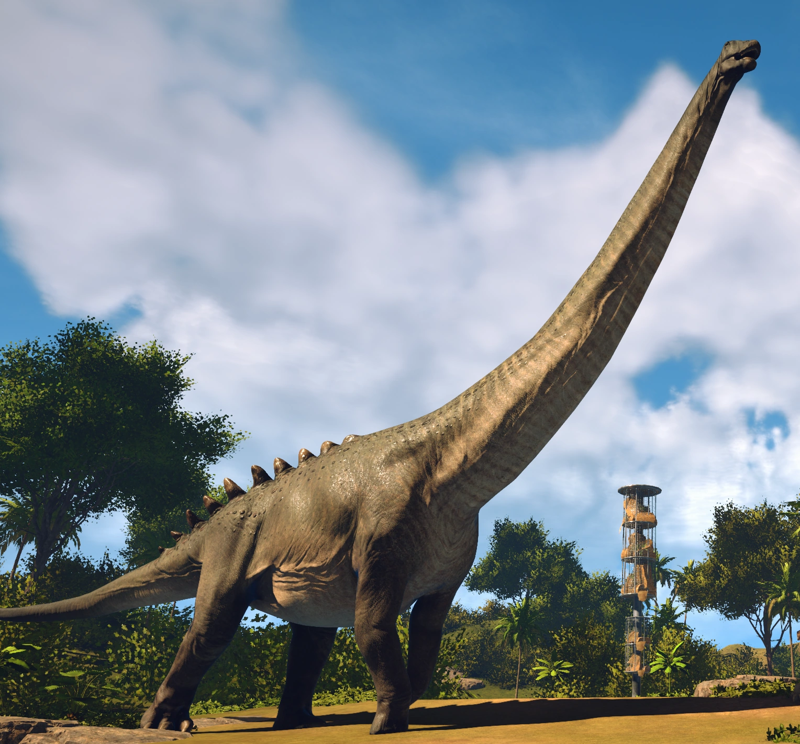
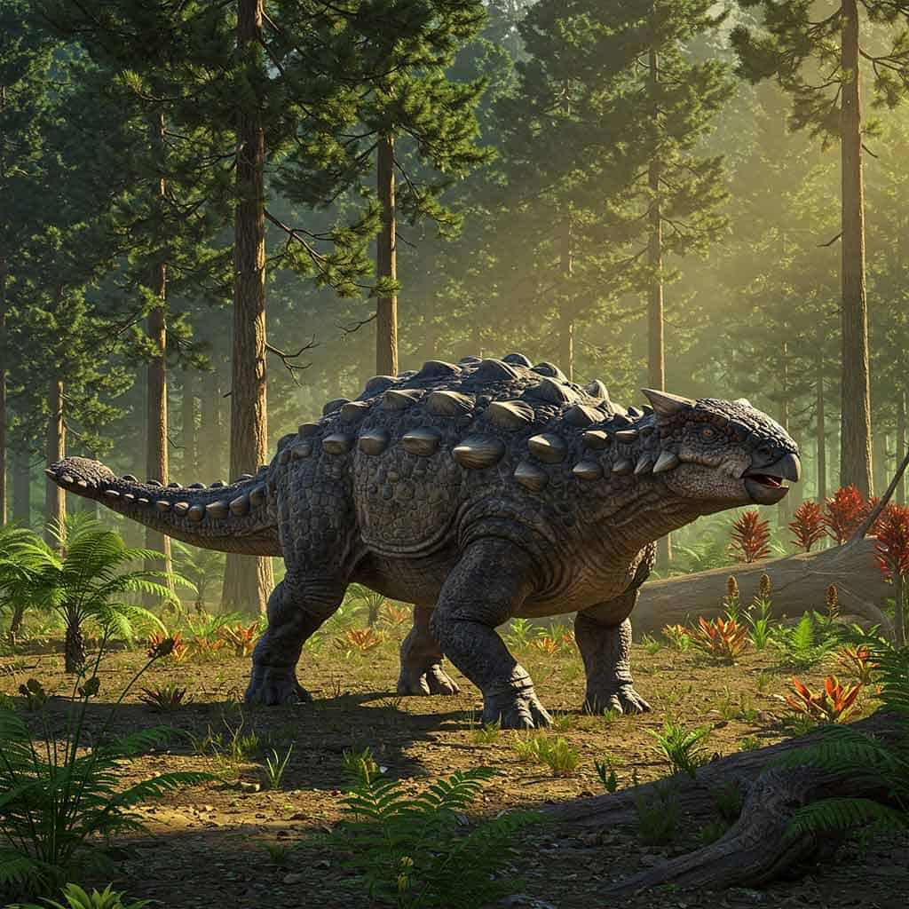
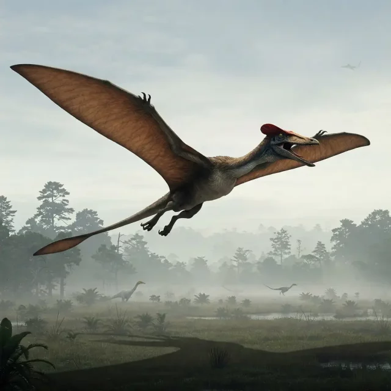

Top 3 Dinosaurs of all time

Argentinosaurus
Argentinosaurus is a genus of giant sauropod dinosaur that lived during the Late Cretaceous period in what is now Argentina. Although it is only known from fragmentary remains, Argentinosaurus is one of the largest known land animals of all time, perhaps the largest, measuring 30–35 m long and weighing 65–80 tons.

Ankylosaurus
Ankylosaurus is a genus of armored dinosaur. Its fossils have been found in geological formations dating to the very end of the Cretaceous Period, about 68–66 million years ago, in western North America, making it among the last of the non-avian dinosaurs.

Quetzalcoatlus
Quetzalcoatlus is a genus of azhdarchid pterosaur that lived during the Maastrichtian age of the Late Cretaceous in North America.